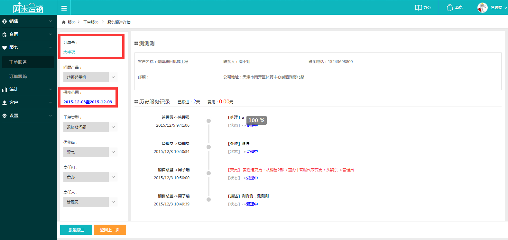

服务跟进
新增工单系统会自动生成工单号，在列表页点击工单号进入工单详情；
1点击左侧订单号，可以查询该产品的订单详情，右边与销售线索页面类似，客服基本信息和历史服务记录；
2点击下方服务跟进，进入服务跟进页面，左侧可修改工单类型和优先级，右侧可进行服务记录和邀请协作，具体操作与销售线索完全一致，此处就不过多介绍了；
3唯一不同的是在服务跟进，添加记录时，多了一个【是否对客户隐藏】功能，默认是不隐藏，所有服务记录，客户都可自行查看，随时关注问题处理进度，当企业内部沟通或涉及到配件价格等信息不想让客户看到时，可以选择对客户因此，记录后，客户在终端查询问题处理进度，就无法看到此条记录了。